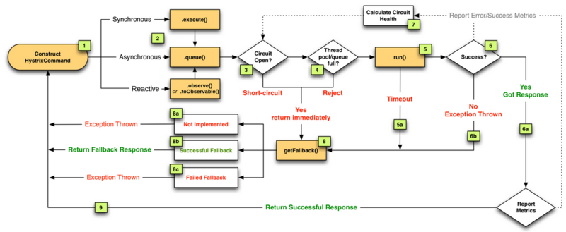
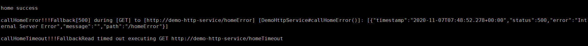
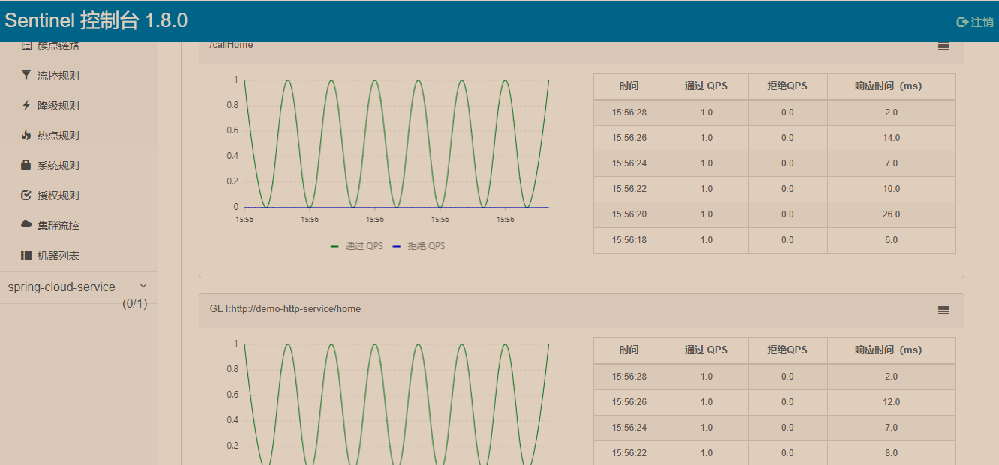

在网关一节提到，在网关上做好容错限流，能解决系统80%~90%的问题，更进一步，服务之间的调用也需要做好容错限流，避免因某个服务的问题拖垮其它服务。
技术要求
熔断限流
熔断的实现，一般采用的是断路器的原理，当请求的错误数达到设定的阈值后，会直接返回或者调用用户自定义的降级函数；同时熔断应该具有自恢复能力，当经过一段时间后，服务恢复正常后，断路器会处于一种半打开（Half-Open）的状态，尝试再次打开。
限流，主要是指对并发请求数的限制。
易于集成
目前所采用的技术栈是Java Spring的体系，如果要在各服务中集成容错限流，要减少对业务的侵入，降低集成成本。
实时监控
需要提供实时监控的UI界面，便于及时识别系统异常，同时提供一些关键指标的简单聚合，便于开发进行后续的服务优化。
技术选型
目前对于容错限流的集成，主要是通过AOP、Filter、Interceptor等方式，目前调研的主要的组件如下：
Hystrix
Hystrix是Netflix开源的一款容错限流框架。主要是通过Filter、Interceptor、AOP这样的切面将用户调用封装在HystrixCommand中。通过信号量/线程池两种方式，在客户端实现对调用的保护。Hystrix阈值的判定通过10秒滚筒计算。可以通过Turbine对多个Hystrix聚合到Dashboard中展示。
Hystrix工作流程（自适应的反馈机）：

Hystrix断路器的工作原理如下图：

Hystrix Github 目前已停止维护。
Sentinel
Sentinel与Hystrix在熔断限流的原则是一致的，Sentinel通过并发线程数进行限制、响应时间窗口对资源进行降级。Sentinel将服务定义为资源，任何一段代码、一个服务，只要是通过Sentinel API定义的代码，都是资源。
下面是在Spring Boot中使用OpenFeign通过注解使用Sentinel（Sentinel OpenFeign Sample）：
使用OpenFeign调用demo-http-service的三个测试方法：正常返回，延时返回，错误返回。
1 |
|
1 |
|
1 | public class DemoHttpServiceFallback implements DemoHttpService { |
这里注意在配置文件中启用：feign.sentinel.enabled=true
返回情况：

Sentinel Dashboard:

Hystrix已经停止更新，Sentinel功能强大，集成简易，建议选用Sentinel。